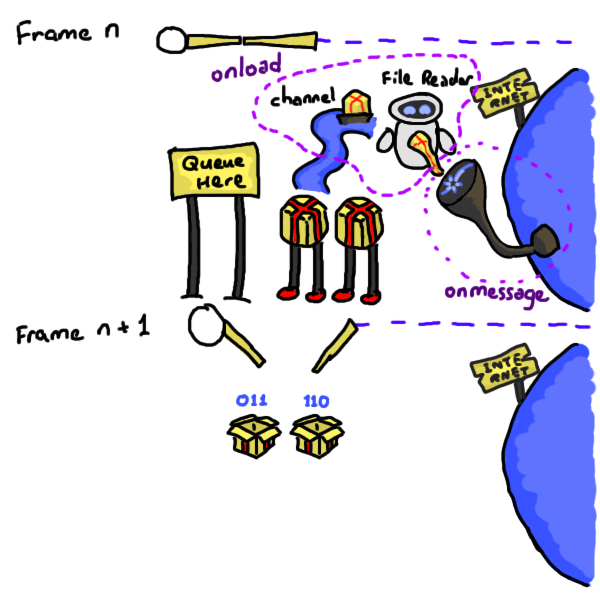

Networking
Takeaways:
- Native: Arbitrary TCP, UDP connections can be made.
- Native: Can communicate using the
WebSocketprotocol. - WASM: Need to obey browser security rules.
- WASM: Can communicate using
WebSockets. - WASM: Receiving messages is done through callbacks, and requires a lot of wiring to pass the message back to Rust.
- Github issue(s): amethyst#2251
Native
Sending Messages
- üåê You want to play online.
- üîå You open a connection.
- üì° You send data.
Receiving Messages
- Check for messages received by the network socket.
- Iterate and decide what to do with them.
Example
WASM
Note: If you retain the TCP / UDP code, the WASM application doesn't crash, but simply logs that this part is not implemented.
Sending Messages
-
üåê You want to play online.
-
üì® You send the
WebSocketand the message byte array (accessed throughSharedArrayBuffer) to JS.#[wasm_bindgen] extern "C" { fn web_socket_send(web_socket: &WebSocket, src: &[u8]); } -
üìã You clone the data.
-
üíΩ You send data to the web socket.
function web_socket_send(web_socket, src) { // Turn the array view into owned memory. var standalone = [...src]; // Make it a Uint8Array. let bytes = new Uint8Array(standalone); web_socket.send(bytes); } -
üìÆ The message is sent when the main thread returns.
Receiving Messages
- When creating the web socket, set up an
onmessagecallback. - In the
onmessagecallback, use a [FileReader] to begin to read the bytes from the socket. - Also, set up an
onloadcallback for when theFileReaderhas finished reading bytes. - In the
onloadcallback, send the message through to Rust using achannel. - In Rust, read from the channel for any messages.
Example
